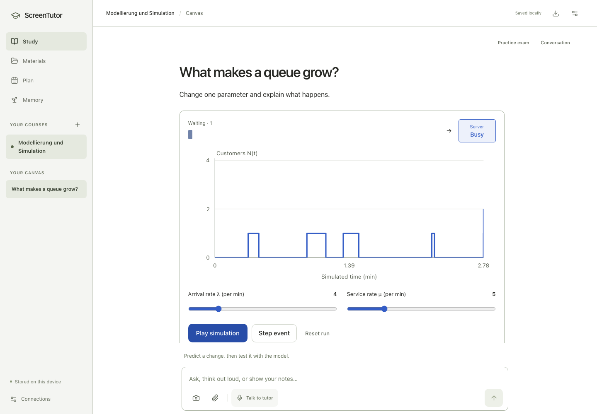

A personal learning canvas · early local build
Make room for
understanding.
Your course material. A voice tutor. A quiet place to think it through—and try the next step yourself.
Open source · Your own API keys · Desktop and touch-friendly layouts

Work towards independence
Less answer chasing.
More working it out.
Bring your slides, exercises and lecture notes into one course space. Predict or explain first. Ask for a small cue, then test yourself on a new example.
- 01
Start with your material.
Source-linked activities keep the course in view. Your lecture notes stay editable and clearly identified.
- 02
Think with your tutor.
Use voice, write your reasoning, or share a photo of your notes. Rich activities stay at the centre.
- 03
Build evidence, then revisit.
Keep independent checks separate from assisted practice. Space reviews across courses, with room to rest.
Built in the open
A learning tool you can help shape.
ScreenTutor is an early local client. Its design draws on retrieval practice, spacing and scaffolded teaching. The app’s learning outcomes have not been evaluated.
Contribute a focused improvement ↗